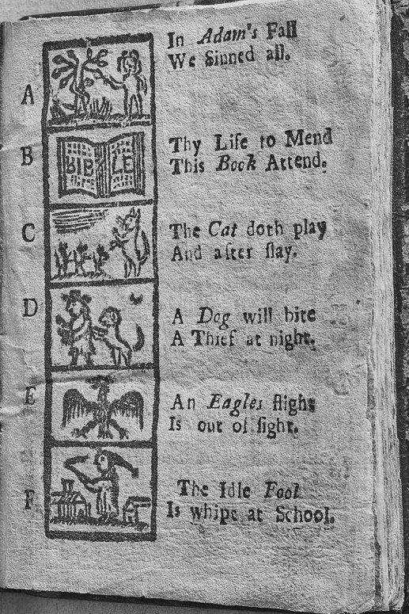

Investigator Rules
- We study the evidence, not the "witches." No one in this case was actually a witch.
- The accused were real people. Today, millions of people around the world are their descendants. Treat their names with respect.
- Every claim needs a source. We need to ask every source questions.
- Investigators can disagree. Back up your ideas with evidence.
The Case
In 1692, a group of very religious people in Massachusetts said their neighbors were witches. They tried the people they accused in court. By the end of it all, twenty people were put to death.
Today, we know the accused were innocent. Your job is to find out how this happened.
You will read real records from 1692. You will collect evidence to create a case file. At the end of this project, you will report what went wrong.
Investigator: ______________________________
Name: ______________________________ Date: ______________
Name: ______________________________ Date: ______________
Map Card: Village and Town
There were two Salems in 1692. Salem Village was a farm town. Today it is called Danvers. Salem Town was a busy port by the sea.
We will read some stops together. For each stop, try to answer both questions. You do not need to read every word!
| Stop | Village or Town? | What happened here? Answer the Find questions. |
|---|---|---|
The Parsonage foundation (read together)
| ||
The Village Meetinghouse site
| ||
The Rebecca Nurse Homestead
| ||
The 1692 Courthouse site (read together)
| ||
The 1692 Jail site
|
Think: How can trouble start in one place and end up in another?
Name: ______________________________ Date: ______________
Place Profile: Whose Land?
Long before 1692, this land had another name: Naumkeag. It means "fishing place."
The people of Naumkeag farmed, fished, and traded here. Between 1616 and 1619, a sickness brought by English traders killed many of them. English settlers arrived in 1626. They took more and more land.
Naumkeag people did not disappear. Some of their descendants still live in Massachusetts today.
What was this place called first?
Who lived here?
What changed when the English came?
Name: ______________________________ Date: ______________
The Frontier War
In 1692, English towns in Maine were at war with Wabanaki people and their French allies. Many English families ran south to towns like Salem.
Historian Mary Beth Norton thinks this war helped cause the witch trials. Fear of attack, she says, turned into fear of witches.
Other historians say she goes too far. They think the war was one cause among many.
What do you think? What evidence would help you decide?
Name: ______________________________ Date: ______________
The Puritan World
Puritan children learned to read from a small book called The New England Primer. A printer named Benjamin Harris first made it in Boston around 1690. Puritans believed every person should be able to read the Bible.

Read these lines from the Primer's alphabet. Mark the words you don't know.
Word bank: mend = fix. attend = pay attention to. doth = does. slay = kill.
N.B. Compare the lines above with the picture. In some places, the printer used capital letters and slanted words. Can you find them? Do they look random to you?
N.B. Printers in the 1700s used a "long s." It looks like an f. Find it in the word "slay."
Name: ______________________________ Date: ______________
Talk it over
Who was this book for?
What does it want children to think and feel?
What can you infer about what Puritans worried about?
N.B. No copy of the first Primer survives. The oldest copy we have was printed in 1727. That was 35 years after the trials.
Another old copy says "God's Book attend" instead of "This Book attend."
Why might two copies of the same book be different? What does that mean for investigators?
Name: ______________________________ Date: ______________
Scene Summary
The case happened in ________________ in the year ________.
Before the English came, the land was called ________________. It means ________________.
There were two Salems: Salem ________________ and Salem ________________.
Puritans believed ______________________________________________.
One question I still have: ________________________________________.
Name: ______________________________ Date: ______________
Week 1 Vocabulary
- colony
- a place ruled by a faraway country
- settler
- a person who moves to a new place to live
- Indigenous
- the first people to live in a place
- Puritan
- an English Protestant who wanted a stricter, simpler church
- minister
- a church leader who preaches
- meetinghouse
- a building used for church and town meetings
- village
- a small town
- infer
- to reach a conclusion based on the facts you have
- source
- something that provides information or facts
- evidence
- information we use to decide whether something is true